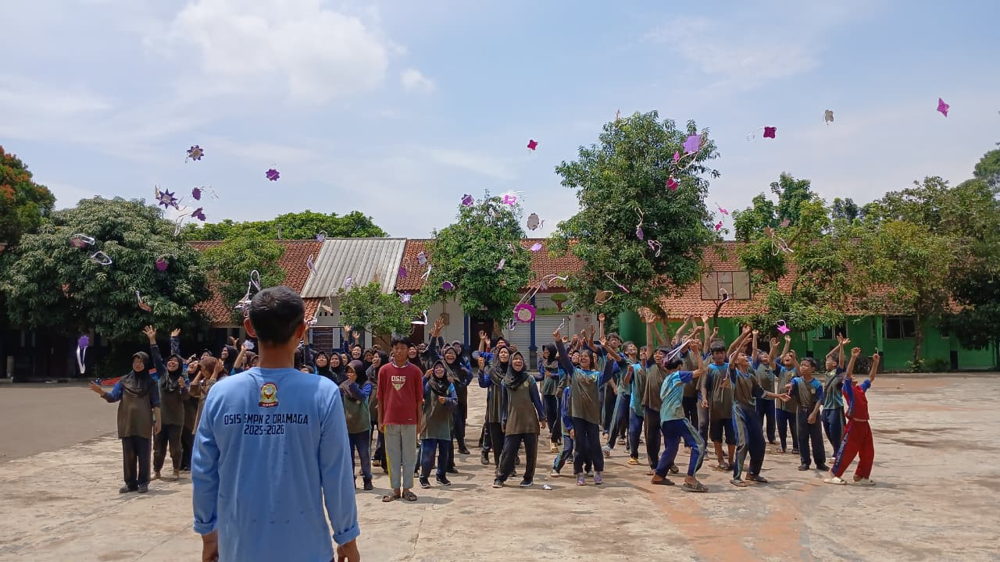
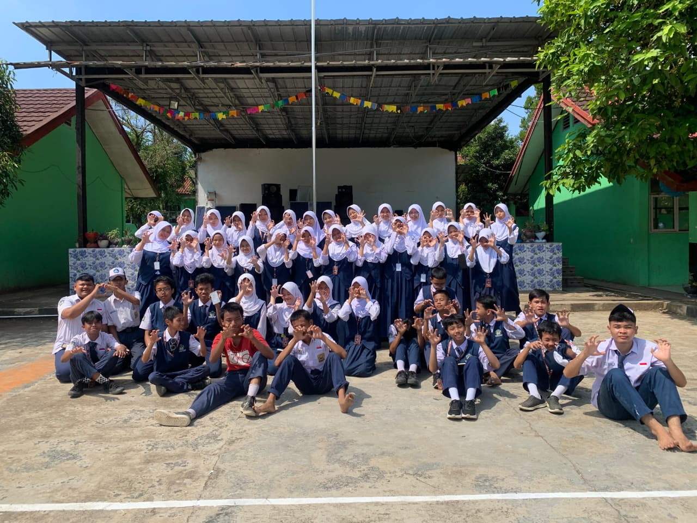
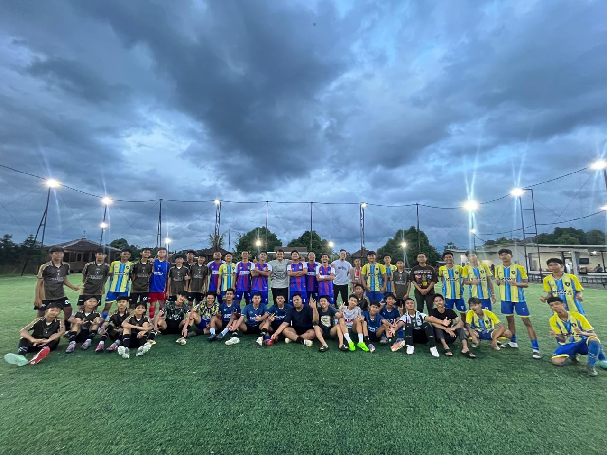
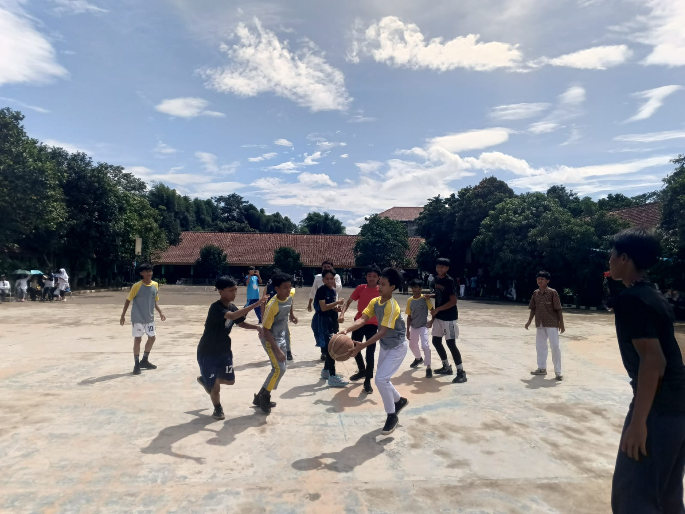

Bidang Kesiswaan
OSIS, Ekstrakurikuler & Organisasi

👑
OSIS
Organisasi Siswa Intra Sekolah (OSIS) menjadi wadah pengembangan kepemimpinan, kedisiplinan, dan tanggung jawab siswa dalam kegiatan sekolah.
- Ketua OSIS
- Wakil Ketua
- Sekretaris
- Bendahara

🎵
SHYPONY
SHYPONY adalah organisasi musik sekolah yang membina bakat siswa dalam bidang vokal, instrumental, dan pertunjukan musik.
- Vokal Grup
- Band Sekolah
- Latihan Musik
- Festival Musik

🤝
MPK
Majelis Perwakilan Kelas (MPK) berperan dalam menyalurkan aspirasi siswa serta menjaga keharmonisan hubungan antara siswa dan sekolah.
- Perwakilan Kelas
- Aspirasi Siswa
- Koordinasi Kegiatan
Ekstrakurikuler

⚽Futsal

🏀Basket
 🎨
🎨
Seni Lukis
 📚
📚
English Club
 🏕️
🏕️
Pramuka
🎶
Musik / SHYPONY